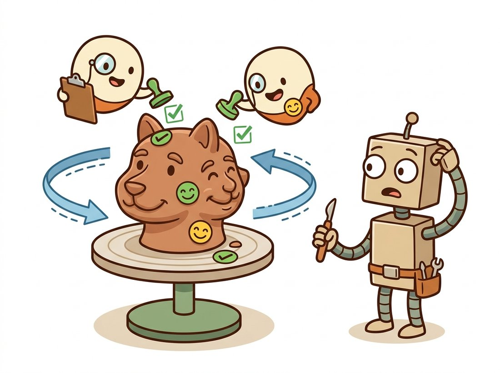

"I was trained only to judge flat pictures. Then someone asked me to imagine the back of a teapot I had never seen, by complaining about every angle until the complaints stopped. Somehow it worked, which quietly worries me."
A 2D Diffusion Prior Pressed Into 3D Service
You can generate a 3D object without a single 3D training example, by using a frozen 2D image diffusion model as a critic that scores rendered views of a 3D representation and pushes it toward looking right from every angle. That trick, score distillation, opened text-to-3D; its slowness and its multi-face artifacts then drove the field to feed-forward generators that produce a 3D asset in one forward pass. This section follows that arc from per-asset optimization to amortized generation, connecting it to the neural scene representations of Chapter 27.
Sections 36.1 and 36.2 grew generation along the time axis, demanding that a thousand frames agree; this section turns to the second axis, depth, where the new demand is that every viewpoint of an object agree with the others. The neural scene representations of Chapter 27, NeRF and 3D Gaussian splatting, were ways to fit a representation to many photographs of one real scene. The question this section answers is different and harder: can we generate a brand-new 3D object from a text prompt or a single image, when we have no multi-view photographs of it at all? The obstacle is data. There are billions of captioned 2D images on the web (the fuel for Chapter 34's text-to-image models) but only millions of 3D assets, far too few to train a text-to-3D model the way we trained text-to-image. The breakthrough was to borrow the 2D model's knowledge.
1. Score Distillation Sampling: 2D Knowledge, 3D Asset Advanced
DreamFusion (Poole et al., 2023) introduced Score Distillation Sampling (SDS). The idea is a closed loop. Hold a 3D representation, say a NeRF with parameters $\theta$, and a frozen pretrained text-to-image diffusion model. Render the NeRF from a random camera angle to get an image, add noise to it, and ask the diffusion model what noise it would predict. If the rendered view looks like a plausible sample from the prompt, the model's predicted noise matches the added noise and there is nothing to fix. If the view looks wrong, the mismatch between predicted and added noise is a gradient that says how to change the pixels to look more plausible, and that pixel gradient is backpropagated through the renderer into the 3D parameters $\theta$.
Crucially, SDS skips the expensive Jacobian of the diffusion U-Net. The gradient of the SDS loss is approximately
$$ \nabla_\theta \mathcal{L}_{\text{SDS}} \;\approx\; \mathbb{E}_{t,\,\epsilon}\!\left[\, w(t)\,\big(\hat{\epsilon}_\phi(\mathbf{x}_t, t, y) - \epsilon\big)\,\frac{\partial \mathbf{x}}{\partial \theta} \,\right], $$
where $\mathbf{x}$ is the rendered image, $\mathbf{x}_t$ is its noised version at timestep $t$, $\hat{\epsilon}_\phi$ is the frozen diffusion model's noise prediction conditioned on prompt $y$, $\epsilon$ is the sampled noise, and $w(t)$ is a weighting. The term $(\hat{\epsilon}_\phi - \epsilon)$ is the residual that drives the 3D parameters; $\partial \mathbf{x} / \partial \theta$ is the differentiable renderer's Jacobian, exactly the volume-rendering gradient from Chapter 27. Optimize $\theta$ to drive this loss down over thousands of random views and the NeRF converges to an object that looks correct from every direction.
# Score Distillation Sampling: turn a frozen 2D diffusion model into a 3D critic.
# The noise residual it predicts on a rendered view becomes a gradient on that
# view, which backpropagates through the renderer into the 3D parameters.
import torch
import torch.nn.functional as F
def sds_loss(diffusion, rendered_img, text_emb, guidance_scale=100.0):
"""Score Distillation Sampling gradient signal for optimizing a 3D model.
rendered_img: differentiable render of the current 3D representation."""
b = rendered_img.shape[0]
t = torch.randint(20, 980, (b,), device=rendered_img.device) # random noise level
noise = torch.randn_like(rendered_img)
noisy = diffusion.add_noise(rendered_img, noise, t) # forward diffusion
with torch.no_grad():
# classifier-free guidance: blend conditional and unconditional predictions
eps_cond = diffusion.unet(noisy, t, text_emb)
eps_uncond = diffusion.unet(noisy, t, diffusion.null_emb)
eps_pred = eps_uncond + guidance_scale * (eps_cond - eps_uncond)
# the key SDS move: the gradient w.r.t. the image IS (eps_pred - noise);
# we attach it to the rendered image without differentiating the U-Net
grad = (eps_pred - noise)
target = (rendered_img - grad).detach()
return 0.5 * F.mse_loss(rendered_img, target, reduction="sum") / b
# In the training loop: render the 3D model, compute sds_loss, backprop into theta.
# Thousands of iterations over random camera poses sculpt a coherent 3D object.(eps_pred - noise) between the frozen diffusion model's predicted noise and the added noise becomes a gradient on the rendered image, which backpropagates through the differentiable renderer into the 3D parameters. The high guidance_scale (around 100) is characteristic of SDS and explains its oversaturated look.The code above shows the trademark of SDS: a very high guidance scale (around 100, versus 7 for ordinary text-to-image) is needed to get usable gradients, which is why early SDS results look oversaturated and cartoonish. The reason such an extreme value is required is that the SDS gradient is enormously noisy: each step uses a single random noise sample at a single random timestep, so the residual $(\hat{\epsilon}_\phi - \epsilon)$ is dominated by sampling variance, and the small prompt-aligned component $(\hat{\epsilon}_{\text{cond}} - \hat{\epsilon}_{\text{uncond}})$ has to be amplified far above that noise floor before it can reliably steer the 3D parameters. Cranking guidance up trades faithful color statistics for a signal strong enough to survive the variance, which is exactly the oversaturation you see.
A second piece of the code deserves a closer look. The target = (rendered_img - grad).detach() line is the elegant hack that turns the noise residual into something an ordinary MSE loss can backpropagate without ever differentiating through the diffusion U-Net itself. The reason it works: the gradient of $\tfrac{1}{2}\lVert \mathbf{x} - \text{target}\rVert^2$ with respect to $\mathbf{x}$ is exactly $(\mathbf{x} - \text{target})$, and since $\text{target} = \mathbf{x} - \text{grad}$ is detached (treated as a constant), that derivative collapses to grad itself. So autograd, asked to minimize this MSE, pushes the rendered image by precisely the SDS residual we wanted, and we never pay for the U-Net's own Jacobian.
Because SDS runs a training loop with a loss and gradients, it is tempting to think the diffusion model is being fine-tuned to "learn" the object, the way you fine-tuned a network in Chapter 21. The opposite is true: the 2D diffusion model is frozen and its weights $\phi$ never change. The only parameters that update are the 3D representation's $\theta$ (the NeRF or Gaussians). The diffusion model acts purely as a fixed critic that scores rendered views, and the torch.no_grad() around its forward pass plus the (eps_pred - noise) trick mean its internal Jacobian is never even computed. This is why one frozen text-to-image checkpoint can supervise an unlimited number of distinct 3D assets: it is distilling knowledge already inside the prior, not acquiring new knowledge per object. Confusing the two leads learners to expect SDS to need 3D training data (it needs none) or to expect the prior to improve as you generate more assets (it does not).
2. The Janus Problem and Its Fixes Intermediate
SDS has a notorious failure mode: the Janus problem, named for the two-faced Roman god. Because the frozen 2D diffusion model was trained mostly on front-facing photographs, it considers a face plausible from many angles, so the optimizer happily grows a face on the back of the head too. Generated animals get faces on both ends; generated objects acquire repeated frontal features. The root cause is that the 2D prior has no notion of viewpoint coherence; it scores each view independently. The illustration below makes the absurdity literal: a viewpoint-blind critic stamps approval from every angle, so the sculptor grows a face on the back of the head too.

The 2D critic was asked "does this look like a face?" from every angle and kept answering an enthusiastic "yes!", so the optimizer dutifully built a face everywhere a yes was available. Nobody ever told it that heads are supposed to have a back. The result is a generation that would be very useful for an owl and disastrous for almost anything else. The fix, whispering "you are looking at the back now" into the prompt, is essentially handing the critic a compass so it stops grading every view as if it were a headshot.
Figure 36.3.1 contrasts the failure with the fix. The practical mitigations all inject viewpoint awareness. View-dependent prompting appends "back view", "side view" to the prompt depending on the sampled camera, the simplest fix. Multi-view diffusion models such as MVDream and Zero-1-to-3 are the deeper fix: they fine-tune the 2D prior on rendered multi-view data so it natively understands camera pose and produces view-consistent guidance. This is the same move that the cross-reference map traces: the camera geometry of Chapter 12 reenters as a conditioning signal for the diffusion prior.
3. The Feed-Forward Revolution Intermediate
SDS produces beautiful results but is slow: each asset requires thousands of optimization steps, minutes to hours on a GPU, because the 3D representation is fit from scratch every time. The field's response was the same amortization move that turned slow per-image optimization into fast feed-forward networks throughout this book: train one network that maps an input directly to a 3D representation in a single forward pass.
The Large Reconstruction Model (LRM, Hong et al., 2024) is the landmark. It is a transformer that takes a single image and outputs a triplane NeRF in about five seconds, trained on a large synthetic 3D dataset so that the 3D knowledge is in the weights rather than rediscovered per asset. DreamGaussian (Tang et al., 2024) made the representation a set of 3D Gaussians (the splatting primitive from Chapter 27) and combined a fast SDS stage with mesh extraction, cutting generation to about two minutes. The 2024 to 2025 line, including InstantMesh, TripoSR, and the multi-view-to-3D pipelines, pushed single-image-to-3D into the sub-ten-second regime with mesh output ready for game engines.
Text-to-3D recapitulates a pattern you have now seen three times in this book. Classical calibration optimized parameters per scene; deep pose estimators amortized it into one forward pass (Chapter 12). NeRF optimized a radiance field per scene; feed-forward reconstruction amortized it (Chapter 27). Score distillation optimizes a 3D asset per prompt; large reconstruction models amortize it. The tradeoff is always the same: optimization is slower but needs no 3D-asset-specific training data and adapts to any input; amortization is fast but bounded by the diversity of its training set. Knowing which regime you are in tells you whether your bottleneck is GPU minutes (optimization) or training-data coverage (amortization).
Implementing SDS plus a NeRF backbone plus multi-view guidance is a multi-hundred-line system. For a quick text-to-3D asset, diffusers ships feed-forward generators behind the familiar pipeline interface:
# Feed-forward text-to-3D with Shap-E: one pipeline call maps a prompt straight
# to a 3D latent, replacing the whole per-asset score-distillation optimization
# loop with a single forward pass that returns in seconds.
import torch
from diffusers import ShapEPipeline
from diffusers.utils import export_to_ply
pipe = ShapEPipeline.from_pretrained("openai/shap-e", torch_dtype=torch.float16)
pipe = pipe.to("cuda")
# One forward pass produces a 3D latent decoded to a mesh, no per-asset optimization.
images = pipe("a worn leather armchair", guidance_scale=15.0,
num_inference_steps=64).images
# Shap-E decodes to an implicit function renderable as a mesh or NeRF.ShapEPipeline call on the prompt "a worn leather armchair" produces a 3D latent in seconds, with no per-asset score-distillation optimization loop. Contrast it with Code Fragment 1, which optimizes one asset over thousands of steps.This replaces the entire SDS optimization loop, the differentiable renderer, the view-conditioned prompting, and the mesh extraction, hundreds of lines and minutes of per-asset GPU time, with one pipeline call that returns in seconds. For production-grade meshes, the same pattern applies to InstantMesh and TripoSR via their official repositories and the threestudio framework.
Run the Shap-E snippet three times with the same prompt and seed, changing only guidance_scale across roughly 3, 15, and 40, and watch how the geometry shifts. At a low value the mesh tends to be smooth and generic but loses the prompt's specifics; at a high value it snaps hard to the prompt and grows sharper, sometimes oversaturated or over-articulated detail. Then mentally connect this to Code Fragment 1: the same knob set near 100 for score distillation is what gives early SDS its cartoonish, oversaturated look. The thing to observe is that guidance trades faithfulness to the prompt against naturalness of the result, and the sweet spot is a value, not an extreme.
An indie game studio with three artists needed thousands of background props (crates, barrels, furniture, debris) for an open-world title and no budget to model each by hand. Their first attempt used DreamFusion-style SDS: the quality was acceptable but each prop took roughly fifteen minutes on their single workstation GPU, so a thousand props would have taken over ten days of continuous compute, and the Janus problem ruined every symmetric object. They re-architected around a feed-forward image-to-3D model: an artist sketched or generated a single concept image in seconds (a 2D text-to-image model from Chapter 34), then a single-image-to-mesh model produced a game-ready asset in under ten seconds. A thousand props became an afternoon. The artists' role shifted from modeling to art-directing and retopologizing the best outputs. The lesson the lead artist gave a conference talk on: SDS taught the field that 3D generation was possible; feed-forward models made it a production tool, and the bottleneck moved from GPU time to curation.
4. Choosing a Representation Beginner
The 3D output can take several forms, each from earlier in the book, and the choice matters downstream. A NeRF or triplane (Chapter 27) gives photorealistic novel views but is awkward to edit and slow to render in real time. 3D Gaussians (Chapter 27) render in real time and are increasingly the default for generative pipelines, which is why Section 36.4 focuses on them. A textured mesh is what game engines and 3D printers actually consume, so most production pipelines extract a mesh as the final step. Modern systems often generate Gaussians or a NeRF first for fidelity, then convert to mesh for compatibility, a two-stage strategy DreamGaussian popularized.
The unifying view is that text-to-3D is a generative wrapper around the representations of Chapter 27, and the same differentiable rendering that let those representations be fit from photos lets them be optimized by a diffusion critic or predicted by a feed-forward network. The next section takes the Gaussian-splatting representation specifically and asks what it means to make it fully generative, the bridge from per-asset generation to whole-scene generation.
Two frontiers are reshaping 3D generation. First, native 3D diffusion: as 3D datasets grow (Objaverse-XL and its successors), models such as CLAY (2024), TRELLIS (Xiang et al., 2024; arXiv:2412.01506, a CVPR 2025 spotlight whose structured-latent representation decodes to meshes, NeRFs, or Gaussians), and the open Hunyuan3D 2.0 line (Tencent, 2025) train diffusion directly on 3D representations rather than distilling from 2D, removing the Janus problem at its root by giving the model genuine 3D priors. Second, video-to-3D and 4D generation: because a video model (Sections 36.1 to 36.2) implicitly generates many consistent views, recent work (e.g. SV3D and the 4D Gaussian lines, 2024) uses a video diffusion model as the multi-view generator feeding a reconstruction model, unifying this chapter's first three sections, and extends to dynamic 3D (a moving 3D scene, sometimes called 4D), which is exactly the spatial substrate a world model needs. The convergence theme of the chapter recurs: video generation, 3D generation, and scene representation are merging into a single generative-geometry stack.
Conceptual. Explain why Score Distillation Sampling needs no 3D training data at all, while a feed-forward large reconstruction model needs a large 3D dataset. Then explain the Janus problem in terms of what the frozen 2D prior does and does not know, and why a multi-view diffusion model fixes it where view-dependent prompting only partly does.
Coding. Run the diffusers Shap-E snippet for three prompts of increasing symmetry (an asymmetric tool, a symmetric vase, a four-legged animal). Render each from front, side, and back. Document which outputs show Janus-like duplicated features and relate the pattern to object symmetry and to the training distribution of the underlying 2D prior.
Analysis. A studio must generate 5,000 unique 3D props. Compare an SDS pipeline at 15 minutes per asset against a feed-forward pipeline at 10 seconds per asset, in total GPU wall-clock. Then argue the non-time tradeoffs: where would the feed-forward model's bounded training diversity hurt, and for which kinds of props would you still reach for per-asset SDS optimization despite its cost?